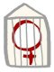

پذيرش > سایت نوشته ها > زنان بیمرخصی / گزارشی از وضعیت زنان زندانی سیاسی


 زنان بیمرخصی / گزارشی از وضعیت زنان زندانی سیاسی زنان بیمرخصی / گزارشی از وضعیت زنان زندانی سیاسی
25 مرداد 1390 - - نسخه قابل چاپ
استفاده از مرخصی، طبق قانون و آییننامه سازمان زندانها از جمله حقوقی است که یک زندانی میبایست از آن بهرهمند شود. با این حال، در مورد زندانیان سیاسی، مسئولان به طرق و دلایل مختلف از اعطای این حق جلوگیری میکنند.
هماکنون شمار زیادی از زندانیان سیاسی در زندانهای مختلف ایران به سر میبرند که با وجود سپری کردن مدتهای طولانی در زندان از حق برخورداری از مرخصی محروم بودهاند.
در بند زنان زندان اوین نیز، تعداد بسیاری از زنان سیاسی زندانی که اغلب زنان بازداشت شده در جریان اعتراضات پس از انتخابات هستند، از حق مرخصی محروم هستند.
این مساله در خصوص زنان زندانی، از آن رو حائز اهمیت است که شماری از آنان دارای فرزندان کوچک بوده، و دوری طولانی مدت آنها از خانواده و فرزندانشان، لطمات جبرانناپذیری را به آنها وارد میکند.
در حال حاضر، چندین زن زندانی سیاسی در زندان اوین به سر میبرند که دارای فرزندان زیر ۱۸ سال هستند و تا کنون از حق مرخصی برخوردار نبودهاند.
در زیر به طور اجمالی به معرفی شماری از زنان زندانی محروم از مرخصی میپردازیم.
۱. نسرین ستوده: نسرین ستوده وکیل دادگستری، در شهریورماه ۸۹ بازداشت شد. وی بیش از ۴ ماه در سلول انفرادی به سر برد و سپس در شعبه ۲۶ دادگاه انقلاب مورد محاکمه قرار گرفت. وی از سوی دادگاه به ۱۱ سال حبس تعزیری و ۲۰ سال محرومیت از حرفه وکالت محکوم شد. نسرین ستوده به مدت ۸ ماه در بند ۲۰۹ زندان اوین به سر برد و هم اکنون در بند عمومی نگهداری میشود.
۲. عاطفه نبوی: عاطفه نبوی، دانشجوی محروم از تحصیل در روز ۲۵ خردادماه به همراه پسر عموی خود «ضیاءالدین نبوی» دستگیر شد. وی پس از ۵ ماه بلاتکلیفی از سوی شعیه ۱۲ دادگاه انقلاب به اتهام «اجتماع و تبانی علیه نظام» از طریق شرکت رد راهپیمایی اعتراضی ۲۵ خرداد، به تحمل ۴ سال حبس تعزیری محکوم شد که این حکم در دادگاه تجدیدنظر به ۳ سال کاهش یافت. وی هماکنون بیش از ۲ سال است که بدون داشتن مرخصی در زندان به سر میبرد.
۳. فرح واضحان: فرح واضحان در دی ماه ۸۸ توسط نیروهای اطلاعات ارتش بازداشت، و در مردادماه سال ۸۹ از سوی شعبه ۱۵ دادگاه انقلاب، به اتهام «محاربه» محاکمه شده و به اعدام محکوم شد. این حکم سپس در دیوان عالی کشور نقض شده و به شعبه ۲۸ دادگاه انقلاب ارسال شد. فرح واضحان، چندی پیش از سوی این شعبه به اتهام محاربه و توهین به رهبری به ۱۵ سال زندان و تبعید به زندان رجاییشهر محکوم شد. وی با وجود داشتن بیماریهای حاد، با وجود گذشت یکسال و نیم از زمان بازداشتش، از حق برخورداری از مرخصی محروم بوده است.
۴. عالیه اقدامدوست: عالیه اقدامدوست، فعال جنبش زنان، که به اتهام شرکت در تظاهرات روز ۲۲ خردادماه سال ۸۵، به تحمل ۳ سال حبس تعزیری محکوم شده است. بیش از۲ سال است که بدون داشتن مرخصی، در زندان به سر میبرد.
۵. کفایت ملکمحمدی: پس از وقایع عاشورای سال ۸۸ بازداشت شد و از سوی دادگاه به تحمل ۵ سال حبس تعزیری محکوم شد. وی با داشتن ۶۵ سال سن، هماکنون مسن ترین زندانی بند زنان است. با این وجود مسئولان زندان از اعطای مرخصی به وی خودداری کردهاند.
۶. فاطمه رهنما: فاطمه رهنما در تیرماه ۸۸ به بازداشت نهادهای امنیتی در آمد. وی که از سوی سایتهای منسوب به دولت، همسر صیغهای شاپور کاظمی (برادر دکتر رهنورد)، معرفی شده بود. از سوی شعبه ۲۶ دادگاه انقلاب به تحمل ۱۰ سال حبس تعزیری و تبعید به زندان شهر ایذه محکوم شد که این حکم در دادگاه تجدیدنظر عینا تایید شد. وی در حال حاضر بیش از ۲ سال است که علیرغم داشتن افسردگی و بیماریهای جدی بدون مرخصی در زندان به سر میبرد. او یکی از معدود زنان زندانی سیاسی است که در تبعید و در زندان سپیدار اهواز نگهداری میشود.
۷. ریحانه حاج ابراهیم دباغ: ریحانه حاج ابراهیم به همراه ۳ عضو دیگر خانوادهاش بازداشت شد. وی که از جمله افرادی بود که در جریان اعترافات تلویزیونی وقایع عاشورا، جلوی دوربین قرار گرفت، از سوی دادگاه به اعدام محکوم شد. این حکم در دادگاه تجدیدنظر به ۱۵ سال حبس کاهش یافت. وی بیش از یکسال و نیم است که بدون مرخصی در زندان به سر میبرد.
۸. مطهره بهرامی: به همراه شوهرش در روز عاشورا در خانهاش بازداشت شد. وی نیز در جریان اعترافات تلویزیونی، مقابل دوربین قرار گرفت و از سوی دادگاه به اعدام محکوم شد. این حکم در دادگاه تجدیدنظر به ۱۵ سال حبس و تبعید به زندان رجاییشهر کاهش یافت. وی نیز بیش از یکسال و نیم است که علیرغم سن بالا و ابتلا به بیماری، از داشتن مرخصی محروم بوده است.
۹. فاطمه خرمجو: فاطمه خرمجو در اسفندماه ۸۸ به همراه دخترش دستگیر شد. وی در مردادماه ۸۹ در شعبه ۱۵ دادگاه انقلاب مورد محاکمه قرار گرفت و به ۵ سال حبس تعزیری محکوم شد. فاطمه خرم جو، ۵۵ ساله، بیش از یکسال و نیم است که بدون برخورداری از حق مرخصی در زندان به سر میبرد. وی نانآور خانواده بوده و یک فرزند معلول دارد.
۱۰. سوسن تبیانیان: سوسن تبیانیان به اتهام داشتن دیانت بهایی و ترویج این دین، در خرداد ماه ۸۹ با حکم دادگاه انقلاب به یکسال و نیم حبس تعزیری محکوم شد و جهت اجرای حکم خود به زندان اوین انتقال یافت. وی علی رغم سپری کردن بیش از یکسال از حکم خود تاکنون از حق مرخصی محروم بوده است.
۱۱. مریم اکبریمفرد: مریم اکبری در وقایع عاشورای سال ۸۸ بازداشت شد. وی که دارای ۳ فرزند و یک دختر سه ساله است، پس از سپری کردن ۳ ماه بازداشت در بند ۲۰۹ به بند عمومی انتقال یافت. مریم اکبری از سوی دادگاه به تحمل ۱۵ سال حبس تعزیری تبعید به زندان رجایی شهرمحکوم شد که این حکم در دادگاه تجدیدنظر تایید شد. وی نیز با وجود داشتن ۳ کودک، تاکنون از حق مرخصی محروم بوده است.
۱۲. شبنم مددزاده: شبنم مددزاده، فعال دانشجویی و عضو انجمن اسلامی دانشگاه تربیت معلم، در اسفندماه ۸۷ بازداشت شد. وی به مدت ۳ ماه در سلول انفرادی نگهداری شد و پس از ۷ ماه به بند نسوان زندان اوین منتقل شد. این فعال دانشجویی از سوی شعبه ۲۸ دادگاه انقلاب به تحمل ۵ سال حبس تعزیری و تبعید به زندان رجاییشهر محکوم شد. وی بیش از ۲ سال است که بدون داشتن حق مرخصی در زندان به سر میبرد.
۱۳. مهوش ثابت: مهوش ثابت یکی از ۷ مدیر بهایی است که در اسفندماه ۸۶ بازداشت شد. وی به مدت ۶ ماه در سلول انفرادی به سر برد و پس از ۲ سال بلاتکلیفی و نگهداری در بند ۲۰۹، سال گذشته از سوی دادگاه به تحمل ۲۰ سال حبس تعزیری محکوم شد که این حکم در دادگاه تجدیدنظر عینا مورد تایید قرار گرفت. وی هم اکنون بیش از ۳سال است که بدون داشتن مرخصی در زندان نگهداری میشود.
۱۴. فریبا کمالآبادی: فریبا کمال آبادی یکی از ۷ مدیر بهایی است که درفروردین ۸۷ بازداشت شد. وی به مدت ۶ ماه در سلول انفرادی به سر برد. و پس از ۲ سال بلاتکلیفی و نگهداری در بند ۲۰۹، سال گذشته از سوی دادگاه به تحمل ۲۰ سال حبس تعزیری محکوم شد که این حکم در دادگاه تجدیدنظر عینا مورد تایید قرار گرفت. وی هماکنون بیش از ۳ سال است که بدون داشتن مرخصی در زندان نگهداری میشود.
کمیته گزارشگران حقوق بشر
ارسال به
بالاترین
،
توییتر
،
فریندفید
،
فیسبوک
در همين بخش :
 یک خبر تلخ؟ یک قانونشکنی؟ یک تصمیم بخشنامهای جدید؟ یک خبر تلخ؟ یک قانونشکنی؟ یک تصمیم بخشنامهای جدید؟
چرا بایست به سکسوالیته پرداخت؟ / نفیسه آزاد
آزارجنسی خانگی؛ «قربانی» نه، «نجات یافته»
زنان، بزرگترین بازندگان بهار عرب
سانسور از دیدگاه جنسیتی/الهه امانی
ديگر بخش ها :
طرح یک میلیون امضا
|
مقالات
|
سایت نوشته ها
|
اخبار
|
گزارش كمپين
|
گفت و گو
|
علیه سکوت
|
كوچه به كوچه
|
نامه های شما
|
گزارش ویژه
|
گفتگو با اعضا
|
ویژه سالگرد کمپین
|
تصویر برابری
|
دل آرام علی
|
تریبون
|
مقالات
|
تاریخ شفاهی
|
خارج از چارچوب
|
کتابخانه
|
درباره کمپین
|
کمپین در شهرها
|
کمپین در بند
|
صدای تغییر
|
ویژه 22 خرداد
|
لایحه حمایت از خانواده
|
گالری
|
عشا مومنی
|
امیر یعقوبعلی
|
خدیجه مقدم
|
راحله عسگری زاده و نسیم خسروی
|
پروین اردلان،جلوه جواهری، مریم حسین خواه، ناهید کشاورز
|
زینب پیغمبرزاده
|
سعیده امین، سارا ایمانیان، محبوبه حسین زاده، ناهید کشاورز و همایون نامی
|
احترام شادفر
|
نسیم سرابندی زاده،فاطمه دهدشتی
|
وبلاگ مهمان
|
پرونده خرم آباد
|
دستگیری ها
|
مریم مالک
|
پرستو اللهیاری
|
مهرنوش اعتمادی
|
سمیه رشیدی
|
Other Languages
|
همراهان
|
«فراخوان کمپین ده روز با بهاره هدایت»
| English
|